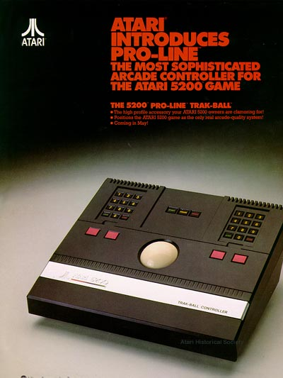

|

One of Atari's most impressive consumer electronics peripherals, the Atari 5200 Trakball controller even by todays standards is one of the best feeling and best designed controllers for any video game console. The Atari 5200 Trakball followed into the design of the Atari 5200 SuperSystem with its ominous high tech look. With a true arcade feel, the trakball controller introduced an all new dimension to classic games such as Centipede, Missile Command and many other games giving the player a true arcade feel and play. The Atari 5200 Trakball was an example of how well Atari could make a product and was a refreshing relief from the use of the Atari 5200 joysticks. The electronics and electro-mechanicals were done by Dan Kramer and Levon Mitchell of Atari's Consumer Electronic's Division. They also worked on the Atari 2600 and Atari home computer trakball controller electronics. A special version of the home computer trakball was designed for use with the Atari home computer version of Missile Command. According to Levon Mitchell, by pressing CTRL-T you could put Missle Command into a special "T"rakball mode to really experience the game as it should be played. Also on a side note, Gary Rubio as a side-project designed 10-20 Atari 5200 "Paddle Contollers", never released, they were an in-house project but a nice idea for yet another Atari 5200 controller.
|